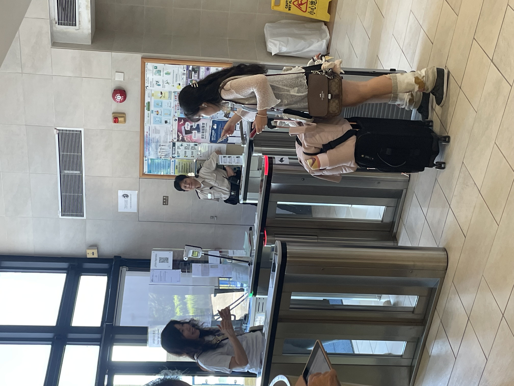
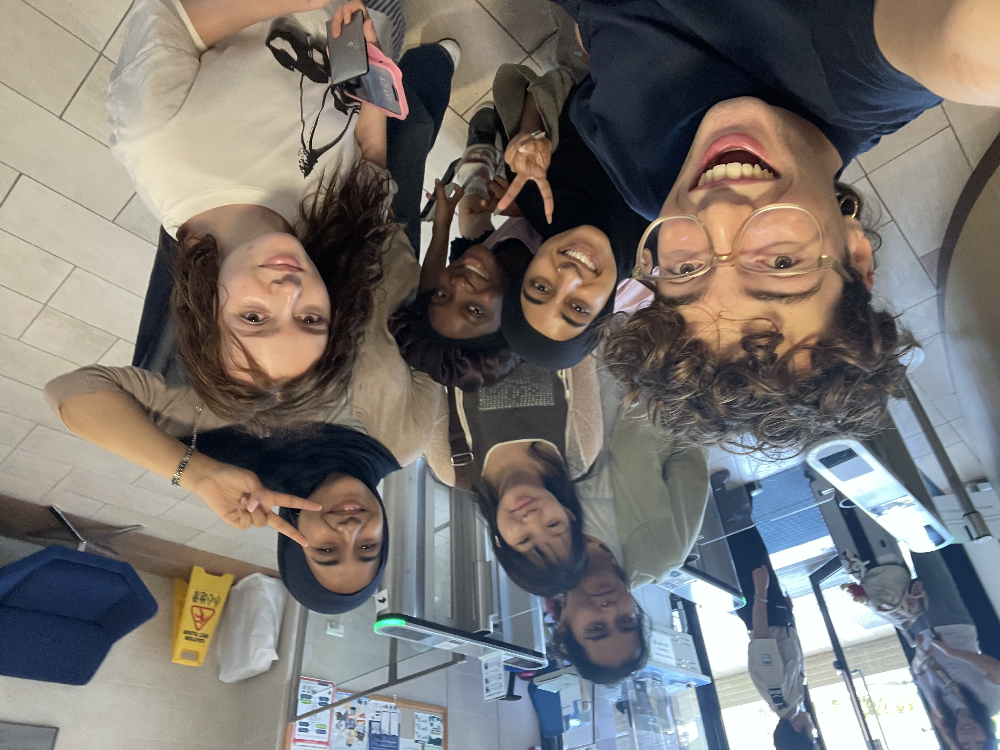
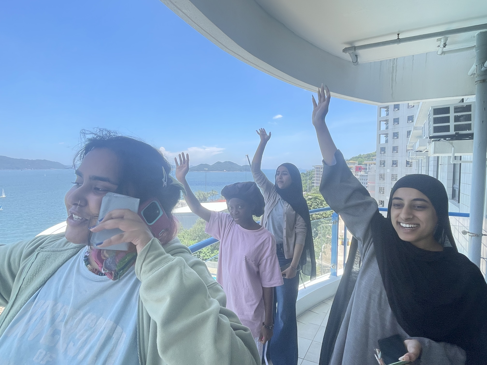
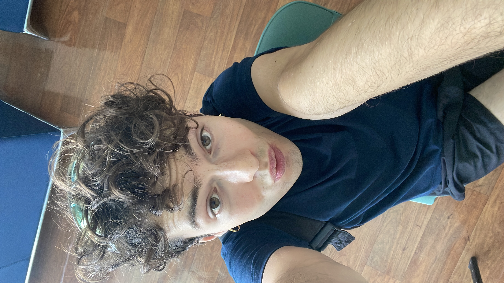
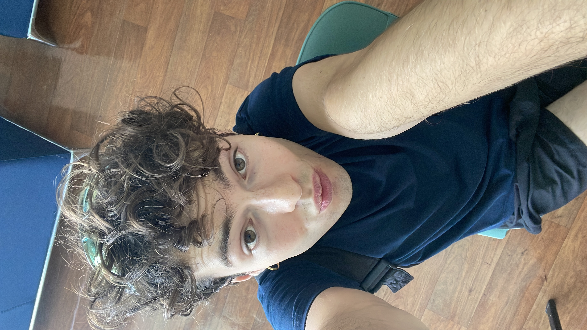

13 Août (Hạ Long) - 14 Août - (Cát Bà)
Premiers adieux. Des valises de partout. Des cartes d'au revoir. De petits cadeaux sont échangés. Tout le monde attend son tour pour partir. On est touxtes très triste de partir, on a encore quelques heures. Enfin moi je pars mercredi, j'ai encore le temps. On se remémore des souvenirs de nos premiers jours ici, de sorties en ville et de randonnées.
   

 Le 14 au matin nous visitons la périphérie de Hạ Long où est situé notre hotel. Au loin nous apreçevons des montagnes bleuetées gisant sur multiples plans. Nous déjeunons un Bánh mì. Notre quartier nous fait un peu penser à une ville fantôme, on marche à côté de restaurants et de cafés presque vides. On imagine que c'est un quartier qui vient de se faire construire. Tous les immeubles se ressemblent et font partie de Vinhomes, une grande entreprise immobilière, dont on a vu deux de leurs immense complexes immobliers similaire sur notre route dupuis l'aéroport. On a aussi vu un de leur parc aquatique. De grands drapeau Vietnamiens sont suspendus un peu partout.
On termine notre visite avec un temple bouddhiste en pleine construction. De manifiques altars avec des offrandes de fruits et de bière vietnamiène, les cigales chantent. Le temple offre un peu de calme dans le bruit des pelleteuses.
Un ferry nous transporte depuis Hạ Long jusqu'à Cát Bà. La végétation est unique. Des déchets flottent au bord des rives. Nous prenons un taxi depuis le ferry jusqu'à notre hotel. Le conducteur
← Retour
Le 14 au matin nous visitons la périphérie de Hạ Long où est situé notre hotel. Au loin nous apreçevons des montagnes bleuetées gisant sur multiples plans. Nous déjeunons un Bánh mì. Notre quartier nous fait un peu penser à une ville fantôme, on marche à côté de restaurants et de cafés presque vides. On imagine que c'est un quartier qui vient de se faire construire. Tous les immeubles se ressemblent et font partie de Vinhomes, une grande entreprise immobilière, dont on a vu deux de leurs immense complexes immobliers similaire sur notre route dupuis l'aéroport. On a aussi vu un de leur parc aquatique. De grands drapeau Vietnamiens sont suspendus un peu partout.
On termine notre visite avec un temple bouddhiste en pleine construction. De manifiques altars avec des offrandes de fruits et de bière vietnamiène, les cigales chantent. Le temple offre un peu de calme dans le bruit des pelleteuses.
Un ferry nous transporte depuis Hạ Long jusqu'à Cát Bà. La végétation est unique. Des déchets flottent au bord des rives. Nous prenons un taxi depuis le ferry jusqu'à notre hotel. Le conducteur
← Retour